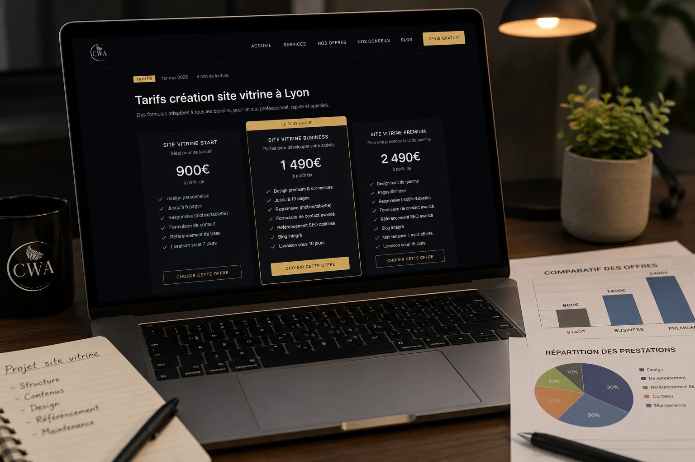

C'est la question que tout le monde se pose avant de lancer son projet web. Et honnêtement, les réponses qu'on trouve en ligne sont souvent floues, ou pire, orientées pour vendre la solution la plus chère. On va être directs.
Les grandes catégories de prix
Le coût d’un site dépend du périmètre, du prestataire et du suivi prévu. Les catégories ci-dessous aident à comparer les devis ; elles ne constituent pas un relevé statistique des prix pratiqués à Lyon.
Les constructeurs en ligne (Wix, Squarespace, Jimdo)
Avec un constructeur en ligne, vous assemblez généralement votre site à partir de modèles. Comparez les fonctionnalités, le coût récurrent, les possibilités de personnalisation et les conditions de récupération des contenus. Les options et les tarifs dépendent de la plateforme et de la formule choisie.
Le freelance
Un freelance peut convenir à un projet simple ou spécialisé. Examinez ses réalisations et demandez un devis précisant le périmètre, les délais, les droits acquis, les modalités de support et la continuité du suivi.
L'agence web à Lyon
Une agence peut réunir plusieurs compétences : conception, rédaction, design, développement ou accompagnement. Vérifiez lesquelles sont réellement incluses dans le devis et si elles répondent à votre besoin.
La petite agence locale ou le studio web
Une petite structure peut proposer un interlocuteur direct et un périmètre adapté à votre activité. Chez Central Web Agency, les formules de création de sites commencent à 450€ TTC ; le prix final dépend des prestations prévues au devis.
L'abonnement mensuel
Certains contrats regroupent création et suivi dans une mensualité ; d’autres séparent ces prestations. Vérifiez le coût total, les droits sur le site et les conditions de résiliation. Chez CWA, la création est facturée séparément : la maintenance mensuelle est facultative et ne finance pas la création initiale.
Le prix d'un site vitrine ne dit pas grand-chose de sa qualité. Ce qui compte, c'est ce qu'il vous rapporte.
Ce qui fait vraiment varier le prix
Deux sites vitrines à 450€ et à 5 000€ peuvent se ressembler visuellement. Voici ce qui justifie réellement l'écart de prix :
- Le nombre de pages — un site 1 page (landing) coûte moins cher qu'un site 6 pages avec galerie, blog et formulaire complexe.
- Le design sur mesure — un template personnalisé revient moins cher qu'un design créé de zéro à partir d'une charte graphique complète.
- Le contenu — si vous fournissez vos textes et photos, c'est moins cher. Si c'est l'agence qui rédige et photographie, ça se paie.
- Le SEO — un site optimisé pour Google dès la création demande plus de travail qu'un site statique sans aucune optimisation.
- Les fonctionnalités — formulaire de réservation, galerie interactive, chatbot, multilingue… chaque fonctionnalité a un coût.
- La maintenance — un site livré sans suivi coûte moins cher au départ mais peut vous coûter cher en cas de problème technique.
À Lyon, quel budget prévoir concrètement ?
Pour comparer des propositions à Lyon, raisonnez d’abord en nombre de pages, contenus et fonctionnalités. Demandez des devis sur un périmètre identique et distinguez le prix de création des dépenses récurrentes :
- Une offre ou un lancement — une landing page peut suffire pour présenter une proposition précise et recevoir des demandes.
- Une activité simple à présenter — un site one-page rassemble vos informations principales sur une seule page.
- Plusieurs services à détailler — un site vitrine de plusieurs pages permet de structurer les prestations et les informations pratiques.
- Des fonctions métier — réservation, espace client ou paiement demandent un périmètre technique et un devis adaptés.
Les questions à poser avant de signer
Quel que soit votre prestataire à Lyon, posez ces questions avant de vous engager :
- Je suis propriétaire du site et du code après livraison ?
- Le site est-il optimisé pour Google dès le départ ?
- Que se passe-t-il si je veux modifier mon site après livraison ?
- L'hébergement est-il inclus ? Si oui, chez quel hébergeur ?
- Avez-vous des exemples de sites réalisés pour des profils similaires au mien ?
- Quels sont les délais réels de livraison ?
Un prestataire sérieux répond clairement à toutes ces questions sans détour. S'il esquive ou que les réponses sont vagues, passez votre chemin.
Notre positionnement chez Central Web Agency
Basés à Heyrieux, à 25 km de Lyon, nous proposons deux formules claires — prix TTC, TVA non applicable, art. 293B du CGI :
- Site clé en main à partir de 450€ TTC — paiement unique, vous êtes propriétaire à 100%, aucun abonnement obligatoire. Design sur mesure, SEO intégré, responsive, 30 jours de retouches offertes, livraison en 1 à 3 semaines.
- Maintenance facultative à partir de 39€/mois TTC — hébergement et suivi technique après livraison, avec des modifications selon la formule. La création initiale du site reste facturée séparément.
Pas de frais cachés, pas de surprise en fin de projet. Le devis que vous acceptez est le prix que vous payez.